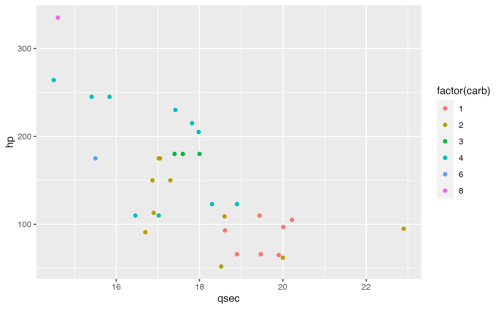
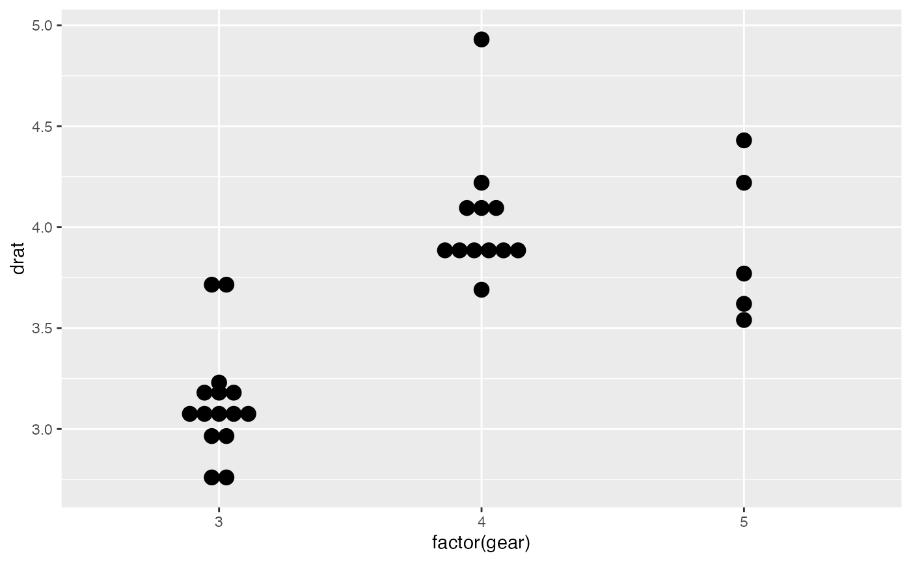

Exercise 1
2023-04-07
Exercise1.RmdQuestion 1
Install and load library dplyr.
chunk
# install package
install.packages(dplyr)chunk
- Call help for function arrange of
dplyr
chunk
# help page of dplyr
?dplyrQuestion 2
Create a variable called myVar and assign it to \(30\)
chunk
myVar <- 30- What data type is
myVar? (Use a function to check)
- Convert
myVarto a different data type
chunk
# convert to string
myVar <- as.character(myVar)
class(myVar)
#> [1] "character"
# convert to integer
myVar <- as.integer(myVar)
class(myVar)
#> [1] "integer"Question 3
Create a new variable called my_num that contains 6
numbers
chunk
my_num <- 16:21
my_num
#> [1] 16 17 18 19 20 21- Multiply
my_numby 4
chunk
my_num * 4
#> [1] 64 68 72 76 80 84Question 4
Create a second variable called my_char that contains 5
character strings
chunk
my_char <- c("nn", "oo", "rr", "ee", "yy")Question 5
Combine the two variables that my_num and
my_char into a variable called both
chunk
both <- c(my_num, my_char)
both
#> [1] "16" "17" "18" "19" "20" "21" "nn" "oo" "rr" "ee" "yy"- What is the length of
both
chunk
length(both)
#> [1] 11- Divide
bothby 3, what happens?
chunk
both/3
#> Error in both/3: non-numeric argument to binary operatorQuestion 6
Create a vector with elements 1, 2, 3, 4, 5, 6 and call it
x
chunk
x <- 1:6
#x <- c(1, 2, 3, 4, 5, 6)
x
#> [1] 1 2 3 4 5 6Question 7
Create another vector with elements 10, 20, 30, 40, 50 and call it
y
chunk
y <- seq(from = 10, to = 50, by = 10)
#y <- c(10, 20, 30, 40, 50)
y
#> [1] 10 20 30 40 50Question 8
What happens if you try to add x and y
together? Why?
- Add
xandytogether
chunk
x + y
#> Warning in x + y: longer object length is not a multiple of shorter object
#> length
#> [1] 11 22 33 44 55 16
##
# We notice that the two variables have different lengths, such that the sixth value of `x` is added to the first value in `y`. We also receive a warning for this operation.- Multiply
xandytogether. Pay attention to how R performs operations on vectors of the same length
chunk
x * y
#> Warning in x * y: longer object length is not a multiple of shorter object
#> length
#> [1] 10 40 90 160 250 60- What happens if
xandyhave the same length?
chunk
x <- 1:5
x + y
#> [1] 11 22 33 44 55
x * y
#> [1] 10 40 90 160 250Question 9
Now create a vector with elements “aa”, “bb”, “cc”, “dd”, “kk” and
call it z
chunk
z <- c("aa", "bb", "cc", "dd", "kk") - What happens if you try to add
xorywithztogether
chunk
x + z
#> Error in x + z: non-numeric argument to binary operator- Why does the error comes up? (Hint: data types)
chunk
##
# We notice that the data type of `x` and `y` (numeric), is different from `z` (character), and we are not able to perform computational operations on different data types.Question 10
If x <- c("ww", "ee", "ff", "uu", "kk"), what is the
output for x[c(2,3)]?
- Can you subset
xin another way and get the same output?
chunk
x[2:3]
#> [1] "ee" "ff"Question 11
If x <- c("ss", "aa", "ff", "kk", "bb"), what will be
the third value in the index vector operation
x[c(2,4,4)]?
chunk
Question 12
Assign fname <- "James" and
lname <- "Bond",
chunk
fname <- "James"
lname <- "Bond"- Produce the output
James Bondusing a line of code (Hint: usepaste())
chunk
paste(fname, lname)
#> [1] "James Bond"
# paste0(fname, " ", lname)Question 13
Create two character vectors:
-
Names <- c("John", "Andrew", "Thomas")and -
Designation <- c("Manager", "Project Head", "Marketing Head").
- Write some R code to obtain the following output (Hint: check help page the function you used to create a data frame):
#> Names Designation
#> 1 John Manager
#> 2 Andrew Project Head
#> 3 Thomas Marketing Headchunk
Names <- c("John", "Andrew", "Thomas")
Designation <- c("Manager", "Project Head", "Marketing Head")
names_design <- paste(Names, Designation)
df <- data.frame("Names Designation" = names_design, check.names = FALSE)
dfQuestion 14
Create the following data frame, and call it Employees
#> Names Age Height Weight Sex
#> 1 Alex 25 177 57 F
#> 2 Lilly 31 163 69 F
#> 3 Mark 23 190 83 M
#> 4 Oliver 52 179 75 M
#> 5 Martha 76 163 70 F
#> 6 Lucas 49 183 83 M
#> 7 Caroline 26 164 53 Fchunk
Names <- c("Alex", "Lilly", "Mark", "Oliver", "Martha", "Lucas", "Caroline")
Age <- c(25, 31, 23, 52, 76, 49, 26)
Height <- c(177, 163, 190, 179, 163, 183, 164)
Weight <- c(57, 69, 83, 75, 70, 83, 53)
Sex <- c("F", "F", "M", "M", "F", "M", "F")
Employees <- data.frame(Names, Age, Height, Weight, Sex)
Employees
#> Names Age Height Weight Sex
#> 1 Alex 25 177 57 F
#> 2 Lilly 31 163 69 F
#> 3 Mark 23 190 83 M
#> 4 Oliver 52 179 75 M
#> 5 Martha 76 163 70 F
#> 6 Lucas 49 183 83 M
#> 7 Caroline 26 164 53 F- Extract specific column from a data frame
chunk
# extract the height column form the data frame
Employees$Height
#> [1] 177 163 190 179 163 183 164- Extract 3rd and 5th rows with 1st and 3rd columns
- Add a new column and call it Education, where everyone has an education status of HS
chunk
Employees$Education <- "HS"
Employees
#> Names Age Height Weight Sex Education
#> 1 Alex 25 177 57 F HS
#> 2 Lilly 31 163 69 F HS
#> 3 Mark 23 190 83 M HS
#> 4 Oliver 52 179 75 M HS
#> 5 Martha 76 163 70 F HS
#> 6 Lucas 49 183 83 M HS
#> 7 Caroline 26 164 53 F HS- Add new row called Louis
chunk
louis_row <- c("Louis", 34, 185, 80, "M", "HS")
Employees <- rbind(Employees, louis_row)
Employees
#> Names Age Height Weight Sex Education
#> 1 Alex 25 177 57 F HS
#> 2 Lilly 31 163 69 F HS
#> 3 Mark 23 190 83 M HS
#> 4 Oliver 52 179 75 M HS
#> 5 Martha 76 163 70 F HS
#> 6 Lucas 49 183 83 M HS
#> 7 Caroline 26 164 53 F HS
#> 8 Louis 34 185 80 M HS- Make
Sexcolumn into a factor. How many factor levels are in the columns?
chunk
Question 15
Create the data frame below and call it Working (make sure you import the variable Working as character and not factor).
chunk
#> Names Working
#> 1 Alex Yes
#> 2 Lilly No
#> 3 Mark No
#> 4 Oliver Yes
#> 5 Martha Yes
#> 6 Lucas No
#> 7 Caroline Yes
#> 8 Louis Yeschunk
Names <- c("Alex", "Lilly", "Mark", "Oliver", "Martha", "Lucas", "Caroline", "Louis")
Working <- c("Yes", "No", "No", "Yes", "Yes", "No", "Yes", "Yes")
Working <- data.frame(Names, Working)
Working- Add this data frame column-wise to the previous one.
chunk
# column bind the new column
Employees_new <- cbind(Employees, Working = Working$Working)
## alternative:
#Employees_new <- dplyr::left_join(x = Employees, y = Working, by = "Names")
Employees_new
#> Names Age Height Weight Sex Education Working
#> 1 Alex 25 177 57 F HS Yes
#> 2 Lilly 31 163 69 F HS No
#> 3 Mark 23 190 83 M HS No
#> 4 Oliver 52 179 75 M HS Yes
#> 5 Martha 76 163 70 F HS Yes
#> 6 Lucas 49 183 83 M HS No
#> 7 Caroline 26 164 53 F HS Yes
#> 8 Louis 34 185 80 M HS Yes- How many rows and columns does the new data frame have?
chunk
dim(Employees_new)
#> [1] 8 7
##
# The new data frame has 8 rows and 7 columns.- What class of data is in each column?
chunk
str(Employees_new)
#> 'data.frame': 8 obs. of 7 variables:
#> $ Names : chr "Alex" "Lilly" "Mark" "Oliver" ...
#> $ Age : chr "25" "31" "23" "52" ...
#> $ Height : chr "177" "163" "190" "179" ...
#> $ Weight : chr "57" "69" "83" "75" ...
#> $ Sex : Factor w/ 2 levels "F","M": 1 1 2 2 1 2 1 2
#> $ Education: chr "HS" "HS" "HS" "HS" ...
#> $ Working : chr "Yes" "No" "No" "Yes" ...
##
# `Names`, `Age`, `Height`, `Weight`, `Education`, `Working` are character (string), and `Sex` is a factor.- Convert the
Age,HeightandWeightto numeric data type or integer data type usingas.[data type]()(Hint:as.numeric()) ; convertEducationandWorkingto factor variable usingdplyr::mutate().
chunk
# convert to numeric data type
Employees_new$Age <- as.numeric(Employees$Age)
Employees_new$Height <- as.numeric(Employees_new$Height)
# convert to integer data type
Employees_new$Weight <- as.integer(Employees_new$Weight)
# convert to factor variable
Employees_new <- dplyr::mutate(Employees_new,
Education = factor(Education),
Working = factor(Working))
##
# Or all together
# Employees_new <- Employees_new |>
# dplyr::mutate(
# Age = as.numeric(Age),
# Height = as.numeric(Height),
# Weight = as.integer(Weight),
# Education = factor(Education),
# Working = factor(Working)
# )
str(Employees_new)
#> 'data.frame': 8 obs. of 7 variables:
#> $ Names : chr "Alex" "Lilly" "Mark" "Oliver" ...
#> $ Age : num 25 31 23 52 76 49 26 34
#> $ Height : num 177 163 190 179 163 183 164 185
#> $ Weight : int 57 69 83 75 70 83 53 80
#> $ Sex : Factor w/ 2 levels "F","M": 1 1 2 2 1 2 1 2
#> $ Education: Factor w/ 1 level "HS": 1 1 1 1 1 1 1 1
#> $ Working : Factor w/ 2 levels "No","Yes": 2 1 1 2 2 1 2 2
Using the iris dataset in R
Question 16
Extract Sepal.Length from the iris dataset
and call the resulting vector mysepal
chunk
mysepal <- iris$Sepal.Length
head(mysepal)
#> [1] 5.1 4.9 4.7 4.6 5.0 5.4- Get the summation, mean, median, max and min of
mysepal
chunk
- Get the summary of
mysepal
chunk
summary(mysepal)
#> Min. 1st Qu. Median Mean 3rd Qu. Max.
#> 4.300 5.100 5.800 5.843 6.400 7.900Question 17
Get all rows of Species versicolor in a new data frame.
Call this data frame: iris.vers
chunk
iris.vers <- subset(iris, Species == "versicolor")
#iris.vers <- iris[iris$Species == "versicolor", ]
iris.vers
#> Sepal.Length Sepal.Width Petal.Length Petal.Width Species
#> 51 7.0 3.2 4.7 1.4 versicolor
#> 52 6.4 3.2 4.5 1.5 versicolor
#> 53 6.9 3.1 4.9 1.5 versicolor
#> 54 5.5 2.3 4.0 1.3 versicolor
#> 55 6.5 2.8 4.6 1.5 versicolor
#> 56 5.7 2.8 4.5 1.3 versicolor
#> 57 6.3 3.3 4.7 1.6 versicolor
#> 58 4.9 2.4 3.3 1.0 versicolor
#> 59 6.6 2.9 4.6 1.3 versicolor
#> 60 5.2 2.7 3.9 1.4 versicolor
#> 61 5.0 2.0 3.5 1.0 versicolor
#> 62 5.9 3.0 4.2 1.5 versicolor
#> 63 6.0 2.2 4.0 1.0 versicolor
#> 64 6.1 2.9 4.7 1.4 versicolor
#> 65 5.6 2.9 3.6 1.3 versicolor
#> 66 6.7 3.1 4.4 1.4 versicolor
#> 67 5.6 3.0 4.5 1.5 versicolor
#> 68 5.8 2.7 4.1 1.0 versicolor
#> 69 6.2 2.2 4.5 1.5 versicolor
#> 70 5.6 2.5 3.9 1.1 versicolor
#> 71 5.9 3.2 4.8 1.8 versicolor
#> 72 6.1 2.8 4.0 1.3 versicolor
#> 73 6.3 2.5 4.9 1.5 versicolor
#> 74 6.1 2.8 4.7 1.2 versicolor
#> 75 6.4 2.9 4.3 1.3 versicolor
#> 76 6.6 3.0 4.4 1.4 versicolor
#> 77 6.8 2.8 4.8 1.4 versicolor
#> 78 6.7 3.0 5.0 1.7 versicolor
#> 79 6.0 2.9 4.5 1.5 versicolor
#> 80 5.7 2.6 3.5 1.0 versicolor
#> 81 5.5 2.4 3.8 1.1 versicolor
#> 82 5.5 2.4 3.7 1.0 versicolor
#> 83 5.8 2.7 3.9 1.2 versicolor
#> 84 6.0 2.7 5.1 1.6 versicolor
#> 85 5.4 3.0 4.5 1.5 versicolor
#> 86 6.0 3.4 4.5 1.6 versicolor
#> 87 6.7 3.1 4.7 1.5 versicolor
#> 88 6.3 2.3 4.4 1.3 versicolor
#> 89 5.6 3.0 4.1 1.3 versicolor
#> 90 5.5 2.5 4.0 1.3 versicolor
#> 91 5.5 2.6 4.4 1.2 versicolor
#> 92 6.1 3.0 4.6 1.4 versicolor
#> 93 5.8 2.6 4.0 1.2 versicolor
#> 94 5.0 2.3 3.3 1.0 versicolor
#> 95 5.6 2.7 4.2 1.3 versicolor
#> 96 5.7 3.0 4.2 1.2 versicolor
#> 97 5.7 2.9 4.2 1.3 versicolor
#> 98 6.2 2.9 4.3 1.3 versicolor
#> 99 5.1 2.5 3.0 1.1 versicolor
#> 100 5.7 2.8 4.1 1.3 versicolorQuestion 18
Get a vector called sepal.dif with the difference
between Sepal.Length and Sepal.Width of
versicolor plants
chunk
sepal.dif <- iris.vers$Sepal.Length - iris.vers$Sepal.Width
sepal.dif
#> [1] 3.8 3.2 3.8 3.2 3.7 2.9 3.0 2.5 3.7 2.5 3.0 2.9 3.8 3.2 2.7 3.6 2.6 3.1 4.0
#> [20] 3.1 2.7 3.3 3.8 3.3 3.5 3.6 4.0 3.7 3.1 3.1 3.1 3.1 3.1 3.3 2.4 2.6 3.6 4.0
#> [39] 2.6 3.0 2.9 3.1 3.2 2.7 2.9 2.7 2.8 3.3 2.6 2.9Question 19
Update (add) iris.vers with the new column
sepal.dif
chunk
iris.vers$`Sepal_diff` <- sepal.dif
#iris.vers <- cbind(iris.vers, Speal_diff = sepal.dif)
head(iris.vers)
#> Sepal.Length Sepal.Width Petal.Length Petal.Width Species Sepal_diff
#> 51 7.0 3.2 4.7 1.4 versicolor 3.8
#> 52 6.4 3.2 4.5 1.5 versicolor 3.2
#> 53 6.9 3.1 4.9 1.5 versicolor 3.8
#> 54 5.5 2.3 4.0 1.3 versicolor 3.2
#> 55 6.5 2.8 4.6 1.5 versicolor 3.7
#> 56 5.7 2.8 4.5 1.3 versicolor 2.9
Using the mtcars dataset in R
Question 21
Check to see if you have the mtcars dataset by entering
the command mtcars.
- What class is
mtcars?
chunk
class(mtcars)
#> [1] "data.frame"
##
# `mtcars` is a data frameQuestion 22
How many variables (columns) and observations (rows)are in the
mtcars dataset?
chunk
dim(mtcars)
#> [1] 32 11
##
# There are 32 observations and 11 variables in the `mtcars` dataset.Question 23
Perform an descriptive analysis on the mtcars dataset
(Hint: data types of columns, mean, median, …).
chunk
# find internal structure
str(mtcars)
#> 'data.frame': 32 obs. of 11 variables:
#> $ mpg : num 21 21 22.8 21.4 18.7 18.1 14.3 24.4 22.8 19.2 ...
#> $ cyl : num 6 6 4 6 8 6 8 4 4 6 ...
#> $ disp: num 160 160 108 258 360 ...
#> $ hp : num 110 110 93 110 175 105 245 62 95 123 ...
#> $ drat: num 3.9 3.9 3.85 3.08 3.15 2.76 3.21 3.69 3.92 3.92 ...
#> $ wt : num 2.62 2.88 2.32 3.21 3.44 ...
#> $ qsec: num 16.5 17 18.6 19.4 17 ...
#> $ vs : num 0 0 1 1 0 1 0 1 1 1 ...
#> $ am : num 1 1 1 0 0 0 0 0 0 0 ...
#> $ gear: num 4 4 4 3 3 3 3 4 4 4 ...
#> $ carb: num 4 4 1 1 2 1 4 2 2 4 ...
# find the data distribution of the `mtcars` dataset
summary(mtcars)
#> mpg cyl disp hp
#> Min. :10.40 Min. :4.000 Min. : 71.1 Min. : 52.0
#> 1st Qu.:15.43 1st Qu.:4.000 1st Qu.:120.8 1st Qu.: 96.5
#> Median :19.20 Median :6.000 Median :196.3 Median :123.0
#> Mean :20.09 Mean :6.188 Mean :230.7 Mean :146.7
#> 3rd Qu.:22.80 3rd Qu.:8.000 3rd Qu.:326.0 3rd Qu.:180.0
#> Max. :33.90 Max. :8.000 Max. :472.0 Max. :335.0
#> drat wt qsec vs
#> Min. :2.760 Min. :1.513 Min. :14.50 Min. :0.0000
#> 1st Qu.:3.080 1st Qu.:2.581 1st Qu.:16.89 1st Qu.:0.0000
#> Median :3.695 Median :3.325 Median :17.71 Median :0.0000
#> Mean :3.597 Mean :3.217 Mean :17.85 Mean :0.4375
#> 3rd Qu.:3.920 3rd Qu.:3.610 3rd Qu.:18.90 3rd Qu.:1.0000
#> Max. :4.930 Max. :5.424 Max. :22.90 Max. :1.0000
#> am gear carb
#> Min. :0.0000 Min. :3.000 Min. :1.000
#> 1st Qu.:0.0000 1st Qu.:3.000 1st Qu.:2.000
#> Median :0.0000 Median :4.000 Median :2.000
#> Mean :0.4062 Mean :3.688 Mean :2.812
#> 3rd Qu.:1.0000 3rd Qu.:4.000 3rd Qu.:4.000
#> Max. :1.0000 Max. :5.000 Max. :8.000
# find the correlation between the `mtcars` variables
cor(mtcars)
#> mpg cyl disp hp drat wt
#> mpg 1.0000000 -0.8521620 -0.8475514 -0.7761684 0.68117191 -0.8676594
#> cyl -0.8521620 1.0000000 0.9020329 0.8324475 -0.69993811 0.7824958
#> disp -0.8475514 0.9020329 1.0000000 0.7909486 -0.71021393 0.8879799
#> hp -0.7761684 0.8324475 0.7909486 1.0000000 -0.44875912 0.6587479
#> drat 0.6811719 -0.6999381 -0.7102139 -0.4487591 1.00000000 -0.7124406
#> wt -0.8676594 0.7824958 0.8879799 0.6587479 -0.71244065 1.0000000
#> qsec 0.4186840 -0.5912421 -0.4336979 -0.7082234 0.09120476 -0.1747159
#> vs 0.6640389 -0.8108118 -0.7104159 -0.7230967 0.44027846 -0.5549157
#> am 0.5998324 -0.5226070 -0.5912270 -0.2432043 0.71271113 -0.6924953
#> gear 0.4802848 -0.4926866 -0.5555692 -0.1257043 0.69961013 -0.5832870
#> carb -0.5509251 0.5269883 0.3949769 0.7498125 -0.09078980 0.4276059
#> qsec vs am gear carb
#> mpg 0.41868403 0.6640389 0.59983243 0.4802848 -0.55092507
#> cyl -0.59124207 -0.8108118 -0.52260705 -0.4926866 0.52698829
#> disp -0.43369788 -0.7104159 -0.59122704 -0.5555692 0.39497686
#> hp -0.70822339 -0.7230967 -0.24320426 -0.1257043 0.74981247
#> drat 0.09120476 0.4402785 0.71271113 0.6996101 -0.09078980
#> wt -0.17471588 -0.5549157 -0.69249526 -0.5832870 0.42760594
#> qsec 1.00000000 0.7445354 -0.22986086 -0.2126822 -0.65624923
#> vs 0.74453544 1.0000000 0.16834512 0.2060233 -0.56960714
#> am -0.22986086 0.1683451 1.00000000 0.7940588 0.05753435
#> gear -0.21268223 0.2060233 0.79405876 1.0000000 0.27407284
#> carb -0.65624923 -0.5696071 0.05753435 0.2740728 1.00000000- What are the unique values in
cyl, andvs(Hint: useunique()).
chunk
- How many unique values in
amandgear(Hint: uselength()).
chunk
- Bonus: Try using
sapply()to find the unique values and the number of unique values incyl,vs,am,gear, andcarball at once.
chunk
sapply(c("cyl", "vs", "am", "gear", "carb"),
FUN = function(k) {
n_distinct(mtcars[k])
})
#> cyl vs am gear carb
#> 3 2 2 3 6Question 24
Get the first 9 observations of mtcars.
- Get the last 9 observations of
mtcars
chunk
# use tail()
tail(mtcars, 9)
#> mpg cyl disp hp drat wt qsec vs am gear carb
#> Camaro Z28 13.3 8 350.0 245 3.73 3.840 15.41 0 0 3 4
#> Pontiac Firebird 19.2 8 400.0 175 3.08 3.845 17.05 0 0 3 2
#> Fiat X1-9 27.3 4 79.0 66 4.08 1.935 18.90 1 1 4 1
#> Porsche 914-2 26.0 4 120.3 91 4.43 2.140 16.70 0 1 5 2
#> Lotus Europa 30.4 4 95.1 113 3.77 1.513 16.90 1 1 5 2
#> Ford Pantera L 15.8 8 351.0 264 4.22 3.170 14.50 0 1 5 4
#> Ferrari Dino 19.7 6 145.0 175 3.62 2.770 15.50 0 1 5 6
#> Maserati Bora 15.0 8 301.0 335 3.54 3.570 14.60 0 1 5 8
#> Volvo 142E 21.4 4 121.0 109 4.11 2.780 18.60 1 1 4 2- Get the 10th to 15th, 24th to 26th, and 28th to 32th observations of
mtcars
chunk
mtcars[c(10:15, 24:26, 28:32), ]
#> mpg cyl disp hp drat wt qsec vs am gear carb
#> Merc 280 19.2 6 167.6 123 3.92 3.440 18.30 1 0 4 4
#> Merc 280C 17.8 6 167.6 123 3.92 3.440 18.90 1 0 4 4
#> Merc 450SE 16.4 8 275.8 180 3.07 4.070 17.40 0 0 3 3
#> Merc 450SL 17.3 8 275.8 180 3.07 3.730 17.60 0 0 3 3
#> Merc 450SLC 15.2 8 275.8 180 3.07 3.780 18.00 0 0 3 3
#> Cadillac Fleetwood 10.4 8 472.0 205 2.93 5.250 17.98 0 0 3 4
#> Camaro Z28 13.3 8 350.0 245 3.73 3.840 15.41 0 0 3 4
#> Pontiac Firebird 19.2 8 400.0 175 3.08 3.845 17.05 0 0 3 2
#> Fiat X1-9 27.3 4 79.0 66 4.08 1.935 18.90 1 1 4 1
#> Lotus Europa 30.4 4 95.1 113 3.77 1.513 16.90 1 1 5 2
#> Ford Pantera L 15.8 8 351.0 264 4.22 3.170 14.50 0 1 5 4
#> Ferrari Dino 19.7 6 145.0 175 3.62 2.770 15.50 0 1 5 6
#> Maserati Bora 15.0 8 301.0 335 3.54 3.570 14.60 0 1 5 8
#> Volvo 142E 21.4 4 121.0 109 4.11 2.780 18.60 1 1 4 2- Subset a data frame of the 15th to 25th observations of
hp,drat, andqsec
chunk
mtcars[15:25, c("hp", "drat", "qsec")]
#> hp drat qsec
#> Cadillac Fleetwood 205 2.93 17.98
#> Lincoln Continental 215 3.00 17.82
#> Chrysler Imperial 230 3.23 17.42
#> Fiat 128 66 4.08 19.47
#> Honda Civic 52 4.93 18.52
#> Toyota Corolla 65 4.22 19.90
#> Toyota Corona 97 3.70 20.01
#> Dodge Challenger 150 2.76 16.87
#> AMC Javelin 150 3.15 17.30
#> Camaro Z28 245 3.73 15.41
#> Pontiac Firebird 175 3.08 17.05- Subset the value of the 10th to 18th observations of
mpganddisp
chunk
# 10th to 18th observations of `mpg`
mtcars$mpg[10:18]
#> [1] 19.2 17.8 16.4 17.3 15.2 10.4 10.4 14.7 32.4
# 10th to 18th observations of `disp`
mtcars$disp[10:18]
#> [1] 167.6 167.6 275.8 275.8 275.8 472.0 460.0 440.0 78.7Question 25
Create a histogram of the mpg using hist()
with appropriate x axis range and label the x axis
- Create a scatter plot of
qsecversushpbycarb.
chunk
library(ggplot2)
# scatter plot using ggplot
ggplot(mtcars) +
aes(x = qsec, y = hp, colour = factor(carb)) +
geom_point()
- Create a dot plot of
gearvariable bydrat.
chunk
# dot plots using ggplot2
ggplot(mtcars) +
aes(x = factor(gear), y = drat) +
geom_dotplot(binaxis = "y", stackdir = "center")
#> Bin width defaults to 1/30 of the range of the data. Pick better value with
#> `binwidth`.